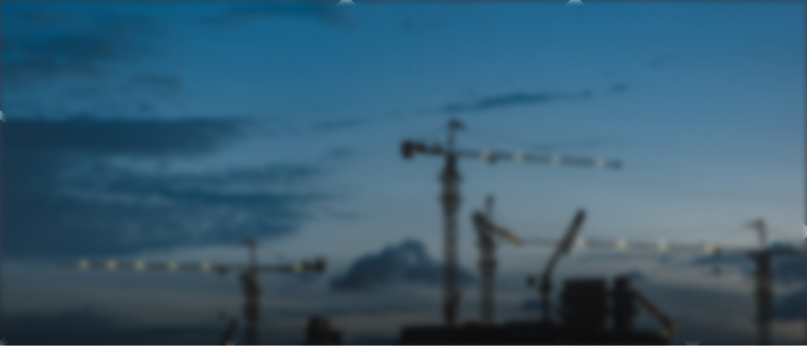
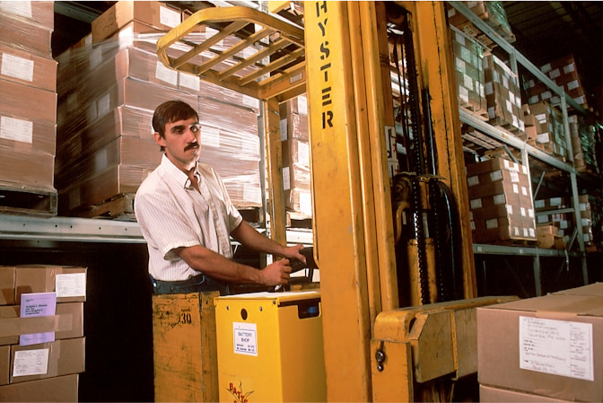
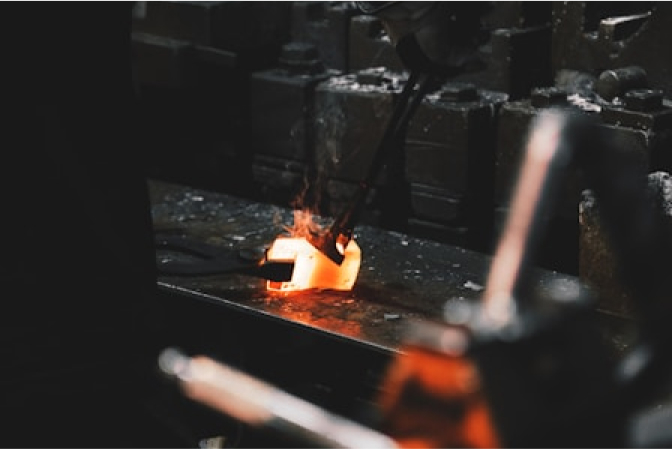
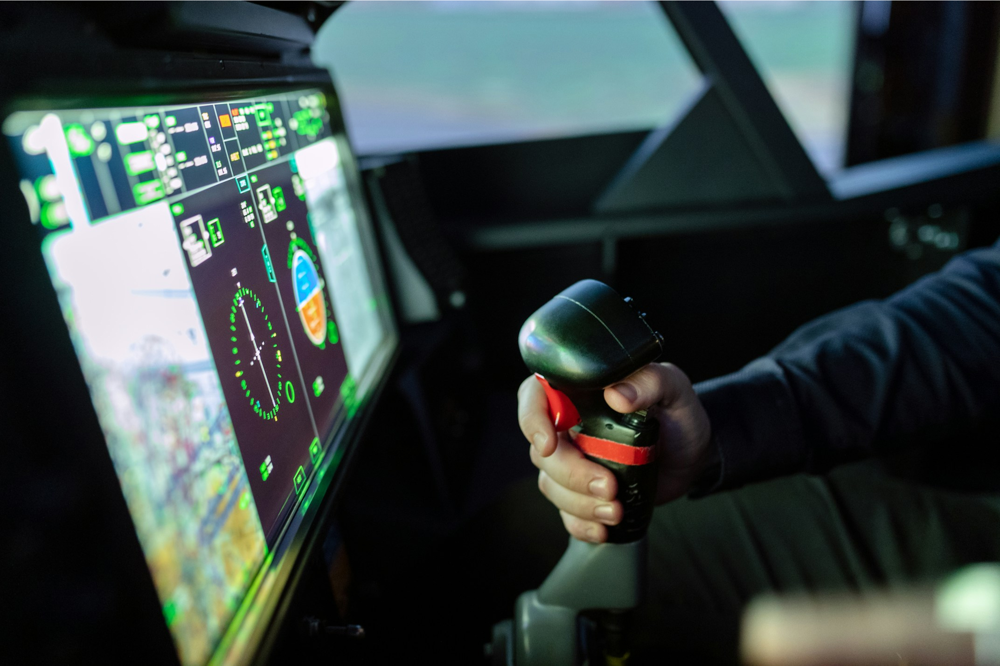

<!DOCTYPE html><html><head><meta charset="utf-8"><meta name="viewport" content="width=device-width"><title>Текстовая страница</title><script src="https://cdn.jsdelivr.net/npm/@splidejs/splide@4.1.4/dist/js/splide.min.js"></script>  <link rel="stylesheet" crossorigin href="/styles/main.css">
</head></html><body><div class="w-full flex justify-center py-4 bg-background-darker"><div class="w-full max-w-screen-xl px-6 flex justify-end"><div class="relative"><button class="flex items-center text-sm uppercase text-black/80" id="langMenuToggle"><svg class="mr-[0.375rem]" width="16" height="16" viewbox="0 0 16 16"><use xlink:href="./spritemap.svg#translate"></use></svg><span>Ru</span><svg class="scale-y-[-1]" width="16" height="16" viewbox="0 0 16 16" id="langMenuArrow"><use xlink:href="./spritemap.svg#caret-up-fill"></use></svg></button><div class="hidden bg-background border border-black/20 absolute right-0 top-full mt-1 z-10 py-0 px-2 min-w-24 rounded-md" id="langMenu"><ul><li class="px-0 pt-2 pb-1 uppercase text-black/70 hover:underline hover:text-accent text-right border-b border-black/15 last:border-0"><a href="#">ru</a></li><li class="px-0 pt-2 pb-1 uppercase text-black/70 hover:underline hover:text-accent text-right border-b border-black/15 last:border-0"><a href="#">uz</a></li></ul></div></div></div></div><div class="py-6 flex-col w-full justify-start items-center flex bg-white"><div class="w-full max-w-screen-xl px-6 justify-start xl:items-center gap-8 flex flex-col md:flex-row"><div><a href="index.html"></a></div><div class="flex flex-col gap-4 grow items-end justify-end"><div class="hidden xl:flex gap-2"><a class="flex justify-center items-center flex-grow-0 flex-shrink-0 relative overflow-hidden gap-2 px-4 py-3 rounded-lg hover:bg-black/5" href="tel: +998950005515"><svg class="text-accent h-4" width="16" height="16" viewbox="0 0 16 16"><use xlink:href="./spritemap.svg#telephone-fill"></use></svg><p class="flex-grow-0 flex-shrink-0 text-xs font-medium text-left uppercase text-black/70">+998 95 000 55 15</p></a><a class="flex justify-center items-center flex-grow-0 flex-shrink-0 relative overflow-hidden gap-2 px-4 py-3 rounded-lg hover:bg-black/5" href="contacts.html"><svg class="text-accent h-4" width="16" height="16" viewbox="0 0 16 16"><use xlink:href="./spritemap.svg#chat-left-text-fill"></use></svg><p class="flex-grow-0 flex-shrink-0 text-xs font-medium text-left uppercase text-black/70">Связаться с нами</p></a><a class="flex justify-center items-center flex-grow-0 flex-shrink-0 relative overflow-hidden gap-2 px-4 py-3 rounded-lg hover:bg-black/5" href="#"><svg class="text-accent h-4" width="16" height="16" viewbox="0 0 16 16"><use xlink:href="./spritemap.svg#list-stars"></use></svg><p class="flex-grow-0 flex-shrink-0 text-xs font-medium text-left uppercase text-black/70">База выпускников</p></a><a class="flex justify-center items-center flex-grow-0 flex-shrink-0 relative overflow-hidden gap-2 px-4 py-3 rounded-lg bg-accent-light hover:bg-accent" href="#"><svg class="text-white h-4" width="16" height="16" viewbox="0 0 16 16"><use xlink:href="./spritemap.svg#send-fill"></use></svg><p class="flex-grow-0 flex-shrink-0 text-xs font-medium text-left uppercase text-white">Заявка на обучение</p></a></div><div class="flex w-full xl:max-w-96 relative"><input class="h-10 pl-4 pr-14 w-full bg-background-darker rounded-lg focus:outline-accent placeholder:text-black/70" type="text" placeholder="Поиск"/><button class="w-10 h-10 flex justify-center items-center absolute right-0 top-0 active:scale-90 text-black/70"><svg width="16" height="16" viewbox="0 0 16 16"><use xlink:href="./spritemap.svg#search"></use></svg></button></div></div></div></div><nav class="flex basis-full justify-center bg-gradient-to-r from-[#0070e0] to-[#080094] sticky top-0 z-20" id="nav"><div class="flex flex-col w-full max-w-screen-xl px-6"><div class="px-0 py-4 flex justify-end xl:hidden"><button class="border-y border-x border-white/50 h-8 w-8 rounded-lg flex justify-center items-center text-white" id="nav-toggle"><svg width="16" height="16" viewbox="0 0 16 16"><use xlink:href="./spritemap.svg#menu"></use></svg></button></div><ul class="hidden xl:flex flex-col basis-full justify-stretch items-stretch xl:flex-row" id="nav-menu"><li class="flex flex-grow basis-0 px-4 py-6 flex-col justify-center items-center border-white/20 max-xl:border-b last:border-b-0 xl:border-r xl:first:border-l"><a class="text-center text-white text-sm font-semibold uppercase leading-none" href="about.html">О нас</a></li><li class="flex flex-grow basis-0 px-4 py-6 flex-col justify-center items-center border-white/20 max-xl:border-b last:border-b-0 xl:border-r xl:first:border-l"><a class="text-center text-white text-sm font-semibold uppercase leading-none" href="courses.html">Курсы</a></li><li class="flex flex-grow basis-0 px-4 py-6 flex-col justify-center items-center border-white/20 max-xl:border-b last:border-b-0 xl:border-r xl:first:border-l"><a class="text-center text-white text-sm font-semibold uppercase leading-none" href="library.html">Бибилиотека</a></li><li class="flex flex-grow basis-0 px-4 py-6 flex-col justify-center items-center border-white/20 max-xl:border-b last:border-b-0 xl:border-r xl:first:border-l"><a class="text-center text-white text-sm font-semibold uppercase leading-none" href="document.html">Документы</a></li><li class="flex flex-grow basis-0 px-4 py-6 flex-col justify-center items-center border-white/20 max-xl:border-b last:border-b-0 xl:border-r xl:first:border-l"><a class="text-center text-white text-sm font-semibold uppercase leading-none" href="gallery.html">Галерея</a></li><li class="flex flex-grow basis-0 px-4 py-6 flex-col justify-center items-center border-white/20 max-xl:border-b last:border-b-0 xl:border-r xl:first:border-l"><a class="text-center text-white text-sm font-semibold uppercase leading-none" href="contacts.html">Контакты</a></li></ul></div></nav><div class="content-wrapper"><header class="w-full max-w-[1120px] px-6 md:px-6"><div class="banner aspect-[4/3] md:aspect-[21/9]"><div class="banner-container justify-center items-center"><h1 class="text-[1.2rem]/[130%] md:text-[1.5rem]/[130%] lg:text-[2rem]/[130%] tracking-widest text-center font-medium uppercase text-white">Профессиональная подготовка в промышленности: ключ к успеху с Учебным Центром «TEXNIK TA’LIM»</h1></div></div></header><main class="w-full max-w-[1120px] px-6 md:px-6"><h1 class="h1">Введение</h1><p class="p-large">Учебный Центр «TEXNIK TA’LIM» – одно из ведущих образовательных учреждений в регионе, специализирующихся на подготовке квалифицированных рабочих для горно-добывающей, металлургической и других отраслей промышленности. С каждым годом требования к специалистам возрастают, и мы активно развиваемся, чтобы соответствовать вызовам времени.</p><h2 class="h2">Важность профессио&shy;наль&shy;ной подготовки</h2><p class="p">Промышленность – это основа экономики, где безопасность и эффективность зависят от уровня подготовки специалистов. В условиях стремительного технологического прогресса и ужесточения стандартов безопасности, квалификация работников становится приоритетной задачей.</p><p class="p">Компетентные сотрудники, прошедшие обучение в нашем центре, успешно применяют полученные знания, что способствует снижению производственных рисков и повышению производительности.</p><blockquote class="blockquote"><svg class="blockquote-icon" width="16" height="16" viewbox="0 0 16 16"><use xlink:href="./spritemap.svg#quote"></use></svg><div><p class="blockquote-text">«Качественное обучение – это не просто набор знаний, а ключ к безопасности и успешной работе на опасных производственных объектах»</p><p class="blockquote-author">— руководство Учебного Центра «TEXNIK TA’LIM»</p></div></blockquote><h3 class="h3">Программа обучения</h3><div class="grid grid-cols-1 md:grid-cols-3 gap-x-8"><div><p class="caption">Студенты центра в процессе практических занятий</p></div><div><p class="caption">Один из ключевых аспектов обучения – знание металлургических процессов</p></div><div><p class="caption">Обучение мерам безопасности на производственных объектах</p></div></div><h4 class="h4">Важность практических навыков</h4><div><p class="caption">Практические занятия на симуляторах безопасности</p></div><p class="p">Большое внимание в обучении уделяется практике. Наши студенты не только изучают теорию, но и работают с реальными производственными задачами. Это позволяет им лучше подготовиться к требованиям работодателей и быстро адаптироваться на рабочих местах.</p><p class="p">Наши выпускники получают знания, которые позволяют им успешно справляться с рабочими обязанностями, а также способствуют улучшению промышленной безопасности. Мы гордимся тем, что подготовили более 1000 специалистов, которые сейчас работают на различных предприятиях страны.</p><p class="p">Промышленность – это сфера, где цена ошибки может быть очень высока. Поэтому мы делаем всё возможное, чтобы обучение было качественным, а наши студенты – максимально подготовленными.</p><h5 class="h5">Наши программы обучения</h5><p class="p">Наши программы ориентированы на потребности рынка и позволяют нашим студентам получить наиболее актуальные знания и навыки. Все курсы разработаны с учетом новейших требований безопасности и производства.</p><p class="p">Каждый курс включает в себя как теоретические занятия, так и практическую работу, что позволяет студентам приобрести ценные навыки, которые они смогут сразу применить на рабочих местах.</p><div class="grid grid-cols-1 lg:grid-cols-3 gap-x-8"><div><h6 class="h6">Обучение для всех уровней специалистов</h6><p class="p">Учебный Центр «TEXNIK TA’LIM» предлагает программы обучения как для новичков, так и для опытных специалистов, которым необходимо повысить квалификацию. Мы готовы предложить решения для всех уровней подготовки.</p></div><div><h6 class="h6">Преимущества нашего обучения</h6><p class="p">Одним из ключевых преимуществ нашего учебного центра является тесная связь с предприятиями. Мы знаем, что нужно работодателям, и предоставляем нашим студентам знания и навыки, которые необходимы для успешной работы.</p></div><div><h6 class="h6">Подготовка к реальным условиям</h6><p class="p">Мы понимаем, что работа на опасных производственных объектах требует не только знаний, но и умения быстро реагировать в сложных ситуациях. Наши программы направлены на обучение студентов тому, как правильно вести себя в условиях стресса и опасности.</p></div></div><h1 class="h1">Перспек&shy;тивы и возмож&shy;но&shy;сти</h1><p class="p">Пройдя обучение у нас, они получают не только знания, но и уверенность в своих силах, что открывает перед ними множество возможностей для карьерного роста. Выпускники могут претендовать на более высокие должности, участвовать в крупных промышленных проектах, а также продолжить свое обучение и развиваться в качестве экспертов в выбранной отрасли.</p></main></div><div class="w-full bg-background-dark text-white/70 flex justify-center items-center py-12"><div class="grid grid-cols-1 md:grid-cols-2 xl:grid-cols-footer-xl gap-16 px-6 pb-12 w-full max-w-screen-xl items-center"><div class="flex max-md:order-1 max-xl:order-2 max-md:justify-start max-xl:justify-end"><svg class="text-white" width="128" height="128"><use xlink:href="./images/footer-logo.svg#footer-logo"></use></svg></div><div class="grow basis-0 max-md:order-2 max-xl:order-1"><ul class="flex flex-col gap-4"><li class="leading-5"><a class="underline hover:text-white" href="index.html">Главная</a></li><li class="leading-5"><a class="underline hover:text-white" href="about.html">О нас</a></li><li class="leading-5"><a class="underline hover:text-white" href="courses.html">Курсы</a></li><li class="leading-5"><a class="underline hover:text-white" href="library.html">Бибилиотека</a></li><li class="leading-5"><a class="underline hover:text-white" href="document.html">Документы</a></li><li class="leading-5"><a class="underline hover:text-white" href="gallery.html">Галерея</a></li><li class="leading-5"><a class="underline hover:text-white" href="contacts.html">Контакты</a></li></ul></div><div class="grow basis-0 max-w-[19.5rem] max-md:order-3 max-xl:order-3"><ul class="flex flex-col gap-4"><li class="leading-5 flex gap-2"><svg class="text-accent shrink-0" width="16" height="16" viewbox="0 0 16 16"><use xlink:href="./spritemap.svg#telephone-fill"></use></svg><a class="underline hover:text-white" href="tel: +998950005515">+998 95 000 55 15</a></li><li class="leading-5 flex gap-2"><svg class="text-accent shrink-0" width="16" height="16" viewbox="0 0 16 16"><use xlink:href="./spritemap.svg#envelope-fill"></use></svg><a class="underline hover:text-white" href="mailto: support@talim.uz">support@talim.uz</a></li><li class="leading-5 flex gap-2"><svg class="text-accent shrink-0" width="16" height="16" viewbox="0 0 16 16"><use xlink:href="./spritemap.svg#building-fill"></use></svg><a class="underline hover:text-white" href="#">Узбекистан, Ташкентская обл., г. Ангрен, Истиклол МФЙ, квартал 6/4, 43-дом</a></li></ul></div><div class="grow basis-0 flex flex-col gap-8 max-md:order-4 max-xl:order-4"><ul class="flex gap-6 max-md:justify-start justify-end"><li><a href="#" title="Telegram"><svg class="w-12 h-12 text-accent hover:text-accent-light" width="16" height="16" viewbox="0 0 16 16"><use xlink:href="./spritemap.svg#telegram"></use></svg></a></li><li><a href="#" title="Instagram"><svg class="w-12 h-12 text-accent hover:text-accent-light" width="16" height="16" viewbox="0 0 16 16"><use xlink:href="./spritemap.svg#instagram"></use></svg></a></li><li><a href="#" title="Facebook"><svg class="w-12 h-12 text-accent hover:text-accent-light" width="16" height="16" viewbox="0 0 16 16"><use xlink:href="./spritemap.svg#facebook"></use></svg></a></li></ul><p class="text-right max-md:text-left">© 2024 Texnik Ta’lim. <br />Все права защищены.</p></div></div></div><script src="./scripts/scripts.js"></script></body>